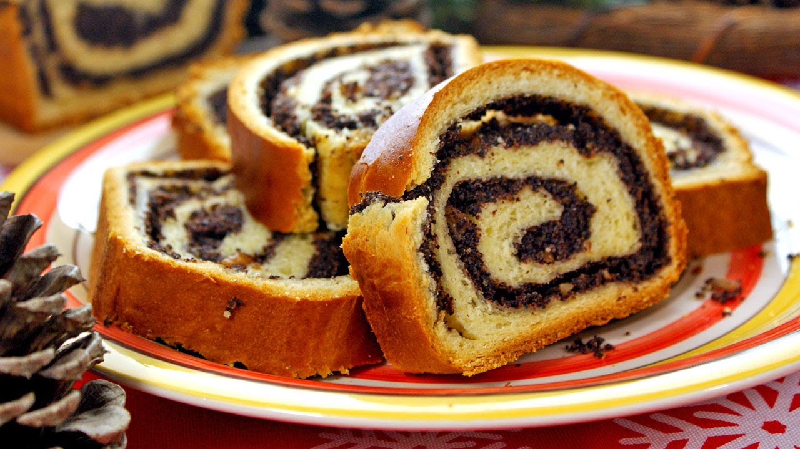
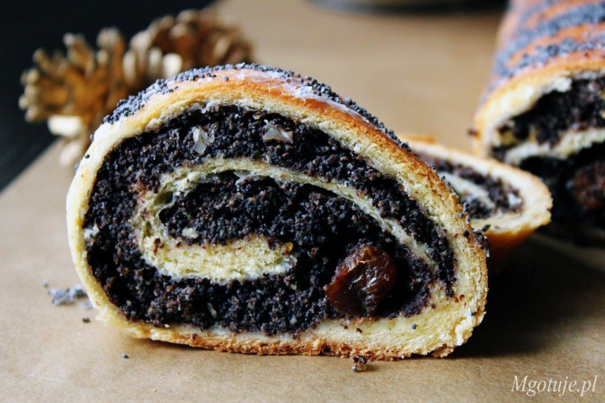
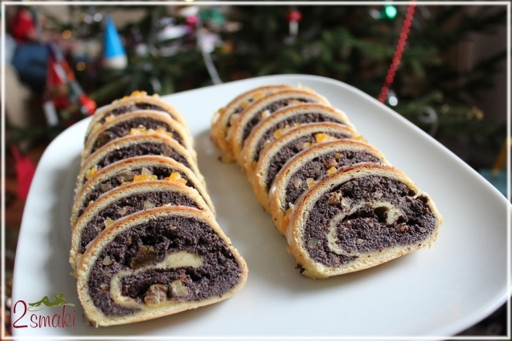

Opis
Kolejne świąteczne, fantastycznie aromatyczne ciasto w Małej Cukierence – „Makowiec sułtański”. Na kruchym cieście, z bakaliami smakuje wybornie. W przygotowaniu nie jest trudny, ale trochę czasu zajmie nam szykowanie maku, co całkowicie się opłaci, jak zjemy kawałeczek pysznego, domowego makowca. Bardzo polecam… (natchnienie z książki siostry Anastazji).

Przepis
Makowiec sułtański – Makowiec na kruchym cieście z bakaliamiSkładniki:
Ciasto:
500g mąki pszennej (użyłam tortowej)
6 żółtek
250g cukru pudru
250g masła
2 płaskie łyżeczki proszku do pieczenia
1 płaska łyżka kwaśnej śmietany
Masa makowa:
2,5 szklanki maku
5 jaj – osobno żółtka i białka
1 szklanka cukru
1 opakowanie cukru wanilinowego 16g
1 łyżka kakao bez cukru
200g poszatkowanych bakalii (użyłam orzechów, migdałów i rodzynek)
1/2 łyżeczki aromatu migdałowego
Dodatkowo:
cukier puder do posypania wymieszany z odrobiną cukru wanilinowego


Inne uwagi
Ciasto:1. Z podanych składników zagnieść rękoma ciasto. Podzielić je na dwie równe części i wstawić do lodówki na 30 minut.
Masa makowa:
2. Mak wsypać do rondelka i zalać gorącą wodą, gotować przez około 5 minut.
Zdjąć z ognia i osączyć na sitku. Następnie mak dwukrotnie zemleć.
3. Białka ubić na sztywną pianę. Ciągle ucierając mikserem, dodawać stopniowo cukier, cukier wanilinowy i mieszać, aż masa stanie się gęsta i lśniąca. Następnie dodać żółtka i dalej mieszać mikserem na jasną, kremową masę.
4. Do maku dodać pianę z jajek, kakao, aromat i bakalie, dokładnie wymieszać.
5. Blaszkę o wymiarach 25x35cm wyłożyć papierem do pieczenia. Jedną schłodzoną częścią ciasta wyłożyć spód blaszki. Na wierzch wyłożyć masę makową, wyrównać.
6. Drugi kawałek ciasta krótko zagnieść i podsypując, rozwałkować na wielkość blaszki. Tak przygotowanym ciastem przykryć masę makową.
7. Ciasto wstawić do nagrzanego piekarnika. Piec w temperaturze 180oC na funkcji góra-dół przez około 60 minut. Piekłam na najniższym poziomie piekarnika.
8. Po wyjęciu z piekarnika odstawić do całkowitego ostygnięcia. Przed podaniem posypać cukrem pudrem.Udanych wypieków:)